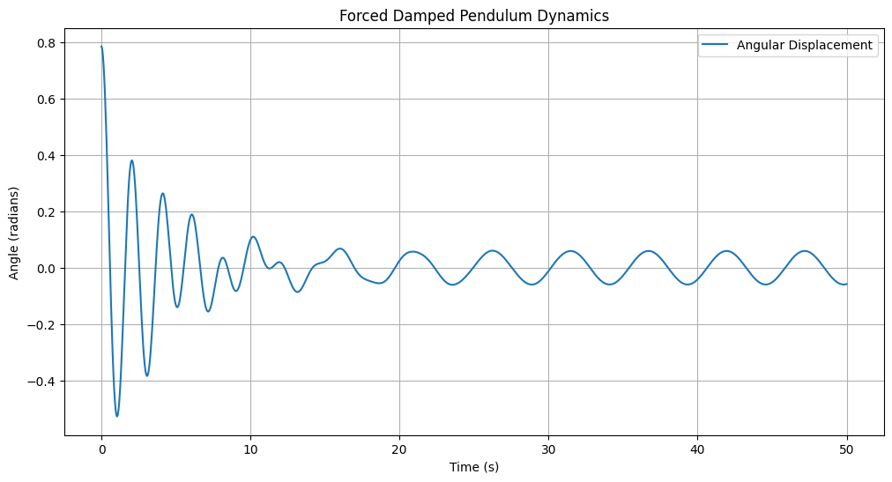

Problem 2
Problem 2: Forced Damped Pendulum Dynamics
1. Theoretical Foundation
1.1 Differential Equation
The motion of a forced damped pendulum is governed by the following nonlinear differential equation:
\(\frac{d^2\theta}{dt^2} + b\frac{d\theta}{dt} + \frac{g}{L}\sin(\theta) = A \cos(\omega t)\)
Where: - \(\theta\) is the angular displacement - \(b\) represents the damping coefficient - \(g\) is gravitational acceleration - \(L\) is pendulum length - \(A\) is driving force amplitude - \(\omega\) is driving force frequency
1.2 Small-Angle Approximation
For small angles, we can simplify \(\sin(\theta) \approx \theta\), resulting in a linearized equation:
\(\frac{d^2\theta}{dt^2} + b\frac{d\theta}{dt} + \frac{g}{L}\theta = A \cos(\omega t)\)
2. Computational Implementation
2.1 Numerical Solution Strategy
We'll use the 4th-order Runge-Kutta method to numerically solve the nonlinear differential equation, allowing exploration beyond small-angle approximations.
2.2 Python Simulation Framework
import numpy as np
import matplotlib.pyplot as plt
from scipy.integrate import odeint
def forced_damped_pendulum(state, t, b, g, L, A, omega):
theta, omega_dot = state
dtheta_dt = omega_dot
domega_dt = -b*omega_dot - (g/L)*np.sin(theta) + A*np.cos(omega*t)
return [dtheta_dt, domega_dt]
# Example simulation parameters
b = 0.5 # Damping coefficient
g = 9.81 # Gravitational acceleration
L = 1.0 # Pendulum length
A = 0.5 # Driving amplitude
omega = 1.2 # Driving frequency
# Time array
t = np.linspace(0, 50, 1000)
# Initial conditions
initial_state = [np.pi/4, 0] # Initial angle and angular velocity
# Solve ODE
solution = odeint(forced_damped_pendulum, initial_state, t,
args=(b, g, L, A, omega))
# Plotting
plt.figure(figsize=(12, 6))
plt.plot(t, solution[:, 0], label='Angular Displacement')
plt.title('Forced Damped Pendulum Dynamics')
plt.xlabel('Time (s)')
plt.ylabel('Angle (radians)')
plt.legend()
plt.grid(True)
plt.show()

3. Dynamical Behavior Analysis
3.1 Resonance Conditions
- Resonance occurs when driving frequency matches system's natural frequency
- Energy transfer maximized during precise frequency matching
3.2 Chaos and Transition Regions
We'll systematically explore: - Impact of damping coefficient - Variation in driving amplitude - Changes in driving frequency
4. Visualization Techniques
4.1 Phase Portraits
- Represent system's state space
- Reveal qualitative behavior transitions
4.2 Poincaré Sections
- Discrete sampling of continuous dynamics
- Identify periodic and chaotic regimes
5. Practical Applications
5.1 Engineering Contexts
- Vibration energy harvesting
- Structural dynamics
- Mechanical system design
- Oscillating circuit behavior
6. Limitations and Future Extensions
6.1 Current Model Constraints
- Linear damping assumption
- Small-angle approximation
- Idealized periodic forcing
6.2 Potential Research Directions
- Nonlinear damping models
- Stochastic forcing mechanisms
- Complex geometric configurations
Conclusion
The forced damped pendulum exemplifies complex nonlinear dynamical systems, bridging theoretical physics and computational modeling.